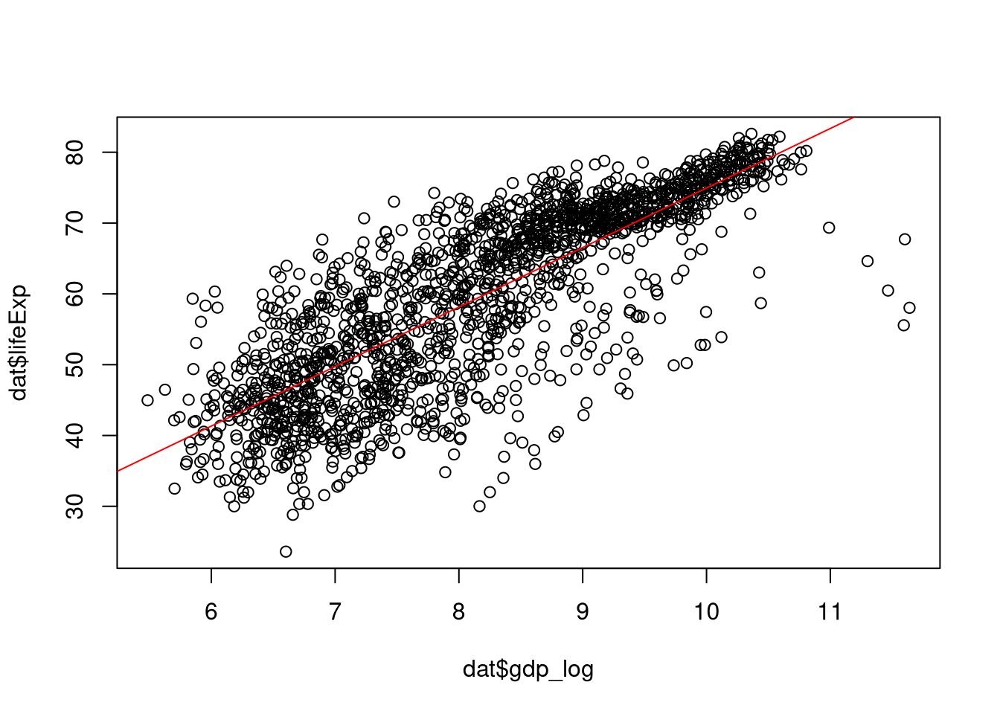

# This is a code chunk with executable R code
# Lines starting with # are comments and not executed
2 + 2[1] 4An applied course using the R programming language
Programming workflows enable far more complex analyses than classical tools, by allowing to iterate faster and scaling better with data size and complexity. Scripting also changes how we think about and conduct data analysis: Unlike point-and-click interfaces, programming forces us to be explicit about every step of our analysis, making our work reproducible and our assumptions transparent.
There are many different ways to approach any data analysis project, but most follow the same rough outline:
This process is much easier to execute and much more transparent when the steps of your analysis are written down in a file compared to just existing in you head, and R is tailored for this kind of workflow.
The document you’re looking at right now is a Quarto notebook, which combines code, results, and verbal description in a single document, implementing a process called literate programming. In a quarto notebook, prose is separated from code contained in cells:
# This is a code chunk with executable R code
# Lines starting with # are comments and not executed
2 + 2[1] 4In the top right of the cell, there is a little play button, which allows you to run the code in the cell. Pressing ctrl + shift achieves the same.
The prose can be styled with markdown, a simple syntax for formatting text. Alternatively, you can use the styling user interface that is available in visual mode, which renders the raw document you see in source mode.
To demonstrate the power of R, let’s run a basic analysis assessing the hypothesis that richer countries have higher average life expectancy (e.g., because they can afford better health care):
# Step 1: Load data
dat <- read.csv("data/gapminder.csv")
# Step 2: Transform data
dat$gdp_log <- log(dat$gdpPercap)
# Step 3: Compute model
fit <- lm(lifeExp ~ gdp_log, data = dat)
# Step 4: Visualize data and model
plot(dat$gdp_log, dat$lifeExp); abline(fit, col = "red")
Of course the true power of R (and any programming workflow) is not in running neat one-liners but in enabling complex analyses where each of these steps can take hundreds of lines of code. The aim of this course is to give you the tools necessary to build your own analyses, whether simple or complex.
R programmingIn R, we assign values to names using the assignment operator <- (the equal sign = also works for assignment but is generally frowned upon in R circles - I don’t really care, use what you want). Variable names are allowed to contain underscores _ and dots . but not any other symbols or spaces. They are also case sensitive:
my_number <- 100
my.even.bigger.number <- 1000
THIS_is_also.a_legal_name <- -3.3334
# this is}an-illegal*name <- 10000Best practice: Use only lowercase and underscores (you will still see dots, but they are olschool). Use descriptive names that make your code self-documenting without being overly explicit (good variable naming is an art).
By creating variables, we keep track of values which we want to reuse in later steps in the analysis. If you want to show the value of a variable, just state it in its own line and execute the cell:
x <- 5
x[1] 5Variables can be overwritten, which can be useful to keep the name space (the set off all names defined in the session) clean. The following code overwrites the variable x from the last cell, which you can validate by looking at the global environment:
x <- x + 10
x[1] 15But be careful, overwriting variables can lead to unexpected behavior and headaches down the road.
my_age with your age. Confirm that the variable exists and has the specified value in your global environment in RStudio.my_age_in_months that multiplies your age by 12 (you can multiply two numbers with *).Functions are objects which take inputs and return outputs (some functions don’t take inputs, or return any output, but produce some other side effect). Functions are called with parentheses directly behind their name and can take arguments. Arguments can be provided by position (in the order expected by the function) or by name (as keyword arguments):
# Positional arguments: order matters
round(3.14159, 2)[1] 3.14# Named arguments: order doesn't matter
round(digits = 2, x = 3.14159)[1] 3.14# Mixed: positional first, then named
round(3.14159, digits = 2)[1] 3.14Best practice: Use positional arguments for the first 1-2 arguments if they are obvious, then switch to named arguments for clarity. For the example above, option three is preferred.
Basically everything interesting you will do in R involves calling functions, so get comfortable with them.
seq(from = ..., to = ..., by = ...) function creates sequences of evenly spaced numbers. Use it to create a sequence of numbers from 1 to 100 in increments of 5. Write your code once with keyword arguments and one with positional arguments.mean function to calculate the average of the sequence.length function to count how many numbers you have.Computers need to distinguish different types of data, such as numbers or text, to be able to do anything useful. While the internal structure of, e.g., floating point numbers or strings of characters representing text is quite complex, we here only need to know how R differentiates them.
The class function can be used to tell the data type of a variable. Here is a review of some of the most common data types and some of the basic things you can do with them:
R has a distinction between real numbers (class double) and integers (class integer), which in practice you don’t often have to care about:
# Numeric (double)
x <- 42.5
class(x)[1] "numeric"# Integer (less common)
y <- 42L
class(y)[1] "integer"Numbers support all the usual arithmetic operations:
5 + 3 # addition
10 - 4 # subtraction
6 * 7 # multiplication
15 / 3 # division
2^3 # exponentiation
# Order of operations matters
2 + 3 * 4
(2 + 3) * 4Strings are how computers represent text and are of class character in R. If you want to create a variable holding a string, you need to put the text into quotes ":
name <- "Jakob"
class(name)[1] "character"Strings will be frequently used to specify how a function should go about its business and a common beginner mistake is forgetting the quotes.
You can join together different strings with paste or extract bits of a string with substr (among many other useful string processing operations):
# Combine strings
first_name <- "John"
last_name <- "Doe"
paste0(first_name, "_", last_name)[1] "John_Doe"# Extract substrings (position-based)
text <- "Statistics"
substr(text, 1, 4) # characters 1 through 4[1] "Stat"The boolean (logical) values true and false have their own datatype, called logical:
is_R_great <- TRUE
is_programming_boring <- FALSE
class(is_R_great)[1] "logical"Logical values typically result from comparing values:
5 > 3 # greater than
5 <= 3 # smaller or equal than
"phillip" == "phillip" # equal (note the double ==)
"philipp" != "phillipp" # not equalWe can perform boolean logic on boolean values, the result of which is again a boolean value:
a <- TRUE
b <- FALSE
a & b # AND
a | b # OR
!a # NOTThis is very useful when, e.g., filtering a set of values by multiple conditions. When doing arithmetic, FALSE and TRUE are treated as 0 and 1, respectively. This can be useful for counting the cases that meet a certain condition, which can be achieved using a sum of booleans.
Vectors are the most fundamental container data type and represent collections of elements of the same basic type (numbers, strings, booleans…):
# Numeric vector
numbers <- c(1, 2, 3, 4, 5)
numbers[1] 1 2 3 4 5# Character vector
names <- c("Alice", "Bob", "Charlie")
names[1] "Alice" "Bob" "Charlie"# Logical vector
bools <- c(TRUE, FALSE, TRUE)
bools[1] TRUE FALSE TRUEIf you try to combine different data types, they will be converted to the least common denominator:
c(1, TRUE, "abc") # converted to string[1] "1" "TRUE" "abc" You can access individual elements or subsets of vectors with square brackets:
numbers <- c(10, 20, 30, 40, 50)
numbers[1] # first element
numbers[3] # third element
numbers[c(1, 3, 5)] # first, third, and fifth elements
numbers[2:4] # elements 2 through 4Instead of specifying the positions of the elements to extract, you can also use a logical vector of the same length to indicate for each element whether to select it or not:
my_idx <- c(TRUE, FALSE, FALSE, TRUE, TRUE)
numbers[my_idx][1] 1 4 5Real data often contains missing values, which R represents as NA:
# Vector with missing values
ages <- c(25, NA, 30, 22, NA)
ages[1] 25 NA 30 22 NA# Check for missing values
is.na(ages)[1] FALSE TRUE FALSE FALSE TRUEMissing values are contagious, i.e. a summary of a vector with missings will often also return missing (how can you know the mean when some values are not known?). Most functions with this behavior have a flag to ignore missing values, like na.rm:
mean(ages) # Returns NA[1] NAmean(ages, na.rm = TRUE) # Remove NAs first[1] 25.66667Factors are a special kind of vector and are Rs way of representing categorical (qualitative) data, i.e. statistical variables which can only take on a set of distinct values: They are quite essential for statistical analysis and will come up frequently when we start doing actual statistics. You can create a factor variable by wrapping a vector in the factor function:
colors <- factor(c("red", "blue", "red", "green", "blue"))
colors[1] red blue red green blue
Levels: blue green redBy default, factors represent unordered (nominal) categorical variables. You can also create ordered factors with the ordered flag, in which case you also probably want to give the order of levels explicitly with the levels argument. In addition, you can change the labels used for the different levels of the factor with the labels argument. Here’s an example combining all of this:
sizes <- factor(
c("S", "B", "S", "M", "M", "S"),
levels = c("S", "M", "B"),
labels = c("small", "medium", "big"),
ordered = TRUE
)
sizes[1] small big small medium medium small
Levels: small < medium < bigNote how we put the arguments to the factor function each on their own line to avoid producing one very long and hard to read line. You can (and should) generally format your code to be more readable like that. R is not sensitive to whitespace, so you don’t need to follow any specific indentation rules but there are some best practices.
lisa_age <- 21
lisa_height <- 148
# Write your code here...summary() function on your new variable. What does it tell you?inventory <- rep(
c("Gravel bike", "City bike", "Racing bike"),
times = c(10, 15, 5)
)
# write your code here...Data frames are the bread-and-butter data structure for data analysis in R. They are like spreadsheets, with rows representing observations and columns representing variables of potentially different data type. Here’s an example:
# Create a data frame
students <- data.frame(
name = c("Alice", "Bob", "Charlie"),
age = c(20, 21, 19),
passed = c(TRUE, FALSE, TRUE)
)
students name age passed
1 Alice 20 TRUE
2 Bob 21 FALSE
3 Charlie 19 TRUEThe values of a data frame can be accessed in several ways. First, if we want to extract a full column as a vector we use the df$column syntax:
students$name[1] "Alice" "Bob" "Charlie"We can chain this with vector indexing via [] to extract a specific value of a column:
students$name[2][1] "Bob"Similarly to how we index vectors (or higher-dimensional arrays, such as matrices), we can also use square brackets directly to index data frames:
students[1, 2] # first row, second columns
students[1:3, "age"] # rows 1 to 3, 'age' column
students[, 2] # all rows, second columnIn the future, we will often rely on higher-level functions to process data frames, but the basic options for accessing their data are still good to know.
Under the hood, data frames are a special kind of what R calls lists, which are a more general form of container that relaxes the primary restriction of vectors: While vector can only store elements of the same basic data type (numbers, strings, booleans, …), lists can contain combinations of things (and even other lists):
# Mixed list
my_list <- list(
numbers = c(1, 2, 3),
names = c("A", "B", "C"),
flag = TRUE
)
my_list$numbers
[1] 1 2 3
$names
[1] "A" "B" "C"
$flag
[1] TRUEList elements can be accessed either by name using the $ operator or by using double square brackets:
my_list <- list(
numbers = c(1, 2, 3),
names = c("A", "B", "C"),
bool = TRUE
)
# Access by name with $
my_list$numbers
my_list$flag
# Access by position or name with [[]]
my_list[[1]] # first element
my_list[["names"]] # by nametitle (character)year (numeric)rating (ordered factor, 1-5 stars)$ to access just the ratings column.[] to access the first row.While R has a big standard library containing many useful functions, one of its biggest strengths is its huge package ecosystem which has packages for all kinds of basic or advanced functionality, from visualization to advanced modeling or GIS.
If you want to use a package (also called a library), there are two steps you need to perform:
Here is how to do these:
# Install once (downloads to your computer)
install.packages("ggplot2")
# Load in each session (makes functions available)
library(ggplot2)After having succesfully installed a package, you should remove or comment out the install statement or else you will get prompted to reinstall the package whenever you rerun your notebook. Alternatively, you can use the RStudio interface for installing packages.
One package (or rather collection of packages) that comprises many useful functions for data science (data wrangling, visualization) is the tidyverse, which includes packages like dplyr for data manipulation, ggplot2 for visualization, readr for reading data, tidyr for data reshaping. You could of course also install and load these individually.
Install the tidyverse using RStudio’s package installation interface.
Load the package using the library() function.
R has great built-in help, which you can access by writing a ? followed by the name of the function you need help with:
?mean
help(mean)The help pages you get with that follow a standard structure:
While they can be a little bit overwhelming at first, they are usually also the most authoritative resource on any piece of code.
Beyond the technical help page for specific functions, you can also get an overview of a package’s functionality and look for vignettes, which are longer tutorials for certain packages:
# See all functions in a package
help(package = "dplyr")
# Browse vignettes (longer tutorials)
browseVignettes("dplyr")Large Language Models like ChatGPT, Claude, or GitHub Copilot can be very useful for explaining error messages, suggesting code solutions, or learning new functions. However, they can also be dangerous for at least two reasons:
They can produce wrong (or even malicous) code
They can keep you from learning what you need to learn
In general, LLMs become more useful when you know the basics - at this stage, you will know how to prompt effectively and the chatbot can help you with quickly writing boilerplate code or suggesting different approaches. Try to be a conscious and responsible user and don’t just copy paste blindly.